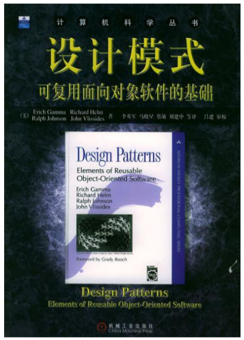
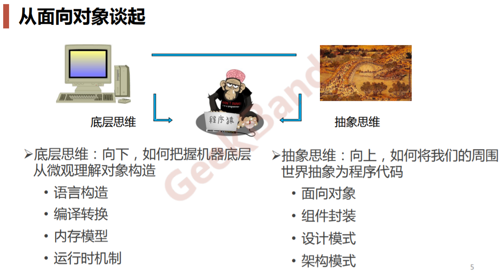
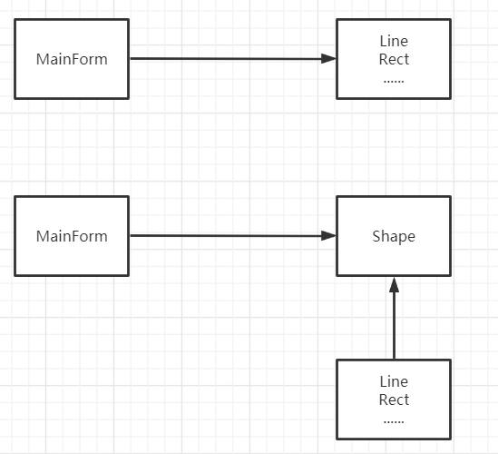
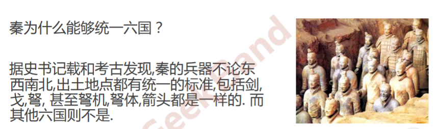
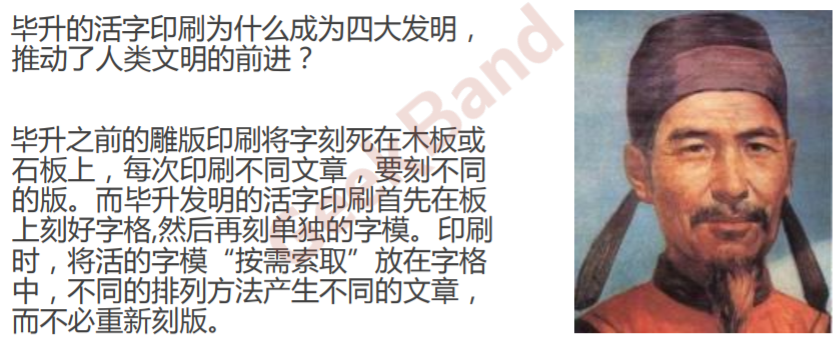

Design Patterns Introduce C++设计模式配套资源：
在线网站：https://refactoring.guru/
课本：可复用面向对象 软件的基础

什么是设计模式 “每一个模式描述了一个在我们周围不断重复发生的问题 ， 以及该问题的解决方案的核心 。这样，你就能一次又一次地使用该方案而不必做重复劳动 ”。 ————Christopher Alexander
课程目标
理解松耦合设计思想
掌握面向对象设计原则
掌握重构技法改善设计
掌握GOF核心设计模式
面对对象 
向下：三大面对对象机制
封装 ，隐藏内部实现继承 ，复用现有代码多态 ，改写对象行为
向上：抽象意义 深刻把握面向对象机制所带来的抽象意义 ，理解如何使用 这些机制来表达现实世界，掌握什么是“好的面向对象设计 ”
软件的复杂性 建筑商从来不会去想给一栋已建好的100层高的 楼房底下再新修一个小地下室——这样做花费 极大而且注定要失败。然而令人惊奇的是，软件 系统的用户在要求作出类似改变时却不会仔细考 虑，而且他们认为这只是需要简单编程的事。
——Object-Oriented Analysis and Design with Applications
复杂性的原因
客户需求的变化
技术平台的变化
开发团队的变化
市场环境的变化 …
复杂性的解决 分解 人们面对复杂性有一个常见的做法：即分而治之，将大问题分解为多个小问题 ，将复杂问题分解为多个简单问题 。
抽象 更高层次来讲，人们处理复杂性有一个通用的技术，即抽象。 由于不能掌握全部的复杂对象，我们选择忽视它的非本质细节 ， 而去处理泛化和理想化了的对象模型。
示例：结构化VS面对对象 实现画图任务的两个代码实现(伪码)，如果我们增加不同的画图功能，对比两个代码会怎么样改变。
示例1 1 2 3 4 5 6 7 8 9 10 11 12 13 14 15 16 17 18 19 20 21 22 23 24 25 26 27 28 29 30 31 32 33 34 35 36 37 38 class Point {public :int x;int y;class Line {public :const Point& start, const Point& end){this ->start = start;this ->end = end;class Rect {public :int width;int height;const Point& leftUp, int width, int height){this ->leftUp = leftUp;this ->width = width;this ->height = height;class Circle {
1 2 3 4 5 6 7 8 9 10 11 12 13 14 15 16 17 18 19 20 21 22 23 24 25 26 27 28 29 30 31 32 33 34 35 36 37 38 39 40 41 42 43 44 45 46 47 48 49 50 51 52 53 54 55 56 57 58 59 60 61 62 63 64 65 66 67 68 69 70 71 72 73 74 75 76 77 78 79 80 81 82 83 84 85 86 class MainForm :public Form {private :vector <Line> lineVector;vector <Rect> rectVector;vector <Circle> circleVector;public :protected :virtual void OnMouseDown (const MouseEventArgs& e) virtual void OnMouseUp (const MouseEventArgs& e) virtual void OnPaint (const PaintEventArgs& e) void MainForm::OnMouseDown (const MouseEventArgs& e) void MainForm::OnMouseUp (const MouseEventArgs& e) if (rdoLine.Checked){Line line (p1, p2) ;else if (rdoRect.Checked){int width = abs (p2.x - p1.x);int height = abs (p2.y - p1.y);Rect rect (p1, width, height) ;else if (...){this ->Refresh();void MainForm::OnPaint (const PaintEventArgs& e) for (int i = 0 ; i < lineVector.size(); i++){for (int i = 0 ; i < rectVector.size(); i++){for (int i = 0 ; i < circleVector.size(); i++){
示例2 1 2 3 4 5 6 7 8 9 10 11 12 13 14 15 16 17 18 19 20 21 22 23 24 25 26 27 28 29 30 31 32 33 34 35 36 37 38 39 40 41 42 43 44 45 46 47 48 49 50 51 52 53 54 55 56 57 58 59 60 61 62 class Shape {public :virtual void Draw (const Graphics& g) 0 ;virtual ~Shape() { }class Point {public :int x;int y;class Line :public Shape{public :const Point& start, const Point& end){this ->start = start;this ->end = end;virtual void Draw (const Graphics& g) class Rect :public Shape{public :int width;int height;const Point& leftUp, int width, int height){this ->leftUp = leftUp;this ->width = width;this ->height = height;virtual void Draw (const Graphics& g) class Circle :public Shape{public :virtual void Draw (const Graphics& g)
1 2 3 4 5 6 7 8 9 10 11 12 13 14 15 16 17 18 19 20 21 22 23 24 25 26 27 28 29 30 31 32 33 34 35 36 37 38 39 40 41 42 43 44 45 46 47 48 49 50 51 52 53 54 55 56 57 58 59 60 61 62 63 64 class MainForm :public Form {private :vector <Shape*> shapeVector;public :protected :virtual void OnMouseDown (const MouseEventArgs& e) virtual void OnMouseUp (const MouseEventArgs& e) virtual void OnPaint (const PaintEventArgs& e) void MainForm::OnMouseDown (const MouseEventArgs& e) void MainForm::OnMouseUp (const MouseEventArgs& e) if (rdoLine.Checked){new Line(p1,p2));else if (rdoRect.Checked){int width = abs (p2.x - p1.x);int height = abs (p2.y - p1.y);new Rect(p1, width, height));else if (...){this ->Refresh();void MainForm::OnPaint (const PaintEventArgs& e) for (int i = 0 ; i < shapeVector.size(); i++){
软件设计的金科玉律：复用 面向对象原则 面向对象设计的最大的优势在于抵御变化
重新认识OOP 🌿 理解隔离变化
从宏观层面来看，面向对象的构建方式更能适应软件的变化， 能将变化所带来的影响减为最小。
🌿 各司其职
从微观层面来看，面向对象的方式更强调各个类的“责任”
由于需求变化导致的新增类型不应该影响原来类型的实现—— 是所谓各负其责
🌿 对象是什么
从语言实现层面来看，对象封装了代码和数据。
从规格层面讲，对象是一系列可被使用的公共接口。
从概念层面讲，对象是某种拥有责任的抽象。
面向对象的设计原则（8种） 🌿依赖倒置原则（DIP）
高层模块(稳定 )不应该依赖于低层模块(变化 )，二者都应该依赖 于抽象(稳定 ) 。
抽象(稳定)不应该依赖于实现细节(变化) ，实现细节应该依赖于 抽象(稳定)。
上一段示例代码的两个例子，高层模块依赖于稳定的Shape虚基类 。

🌿开放封闭原则（OCP）
对扩展开放，对更改封闭。
类模块应该是可扩展的，但是不可修改。
🌿单一职责原则（SRP）
一个类应该仅有一个引起它变化的原因。
变化的方向隐含着类的责任。
🌿Liskov 替换原则（LSP）
子类必须能够替换它们的基类(IS-A)（继承时思考是不是组合关系）。
继承表达类型抽象。
🌿接口隔离原则（ISP）
不应该强迫客户程序依赖它们不用的方法。
接口应该小而完备 。
🌿优先使用对象组合，而不是类继承
类继承通常为“白箱复用”，对象组合通常为“黑箱复用”。
继承在某种程度上破坏了封装性，子类父类耦合度高。
而对象组合则只要求被组合的对象具有良好定义的接口，耦合度低。
🌿封装变化点 使用封装来创建对象之间的分界层，让设计者可以在分界层的 一侧进行修改，而不会对另一侧产生不良的影响，从而实现层 次间的松耦合。
🌿针对接口编程，而不是针对实现编程
不将变量类型声明为某个特定的具体类，而是声明为某个接口。
客户程序无需获知对象的具体类型，只需要知道对象所具有的接口。
减少系统中各部分的依赖关系，从而实现“高内聚、松耦合” 的类型设计方案。
接口标准化（分工协作） 标准化工作往往是一个产业强盛的标准，这一点在学习计网的时候也有体会到（不同协议标准规定统一促进行业发展）
以史为鉴 

设计原则提升为设计经验 🎈设计习语 Design Idioms Design Idioms 描述与特定编程语言相关的低层模式，技巧， 惯用法（cpp primer，more effect cpp）。
🎈设计模式 Design Patterns Design Patterns主要描述的是“类与相互通信的对象之间的组织关系 ，包括它们的角色、职责、协作方式等方面。
🎈架构模式 Architectural Patterns Architectural Patterns描述系统中与基本结构组织关系密切的高层模式 ，包括子系统划分，职责，以及如何组织它们之间关系的规则。